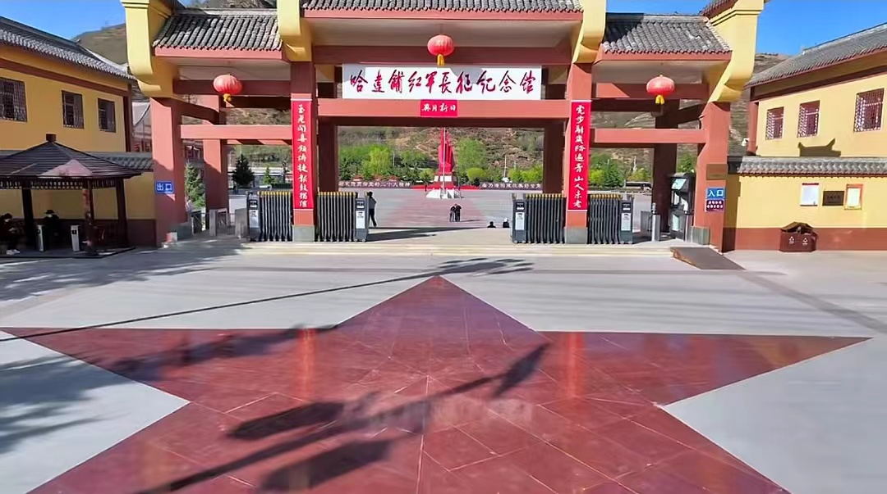
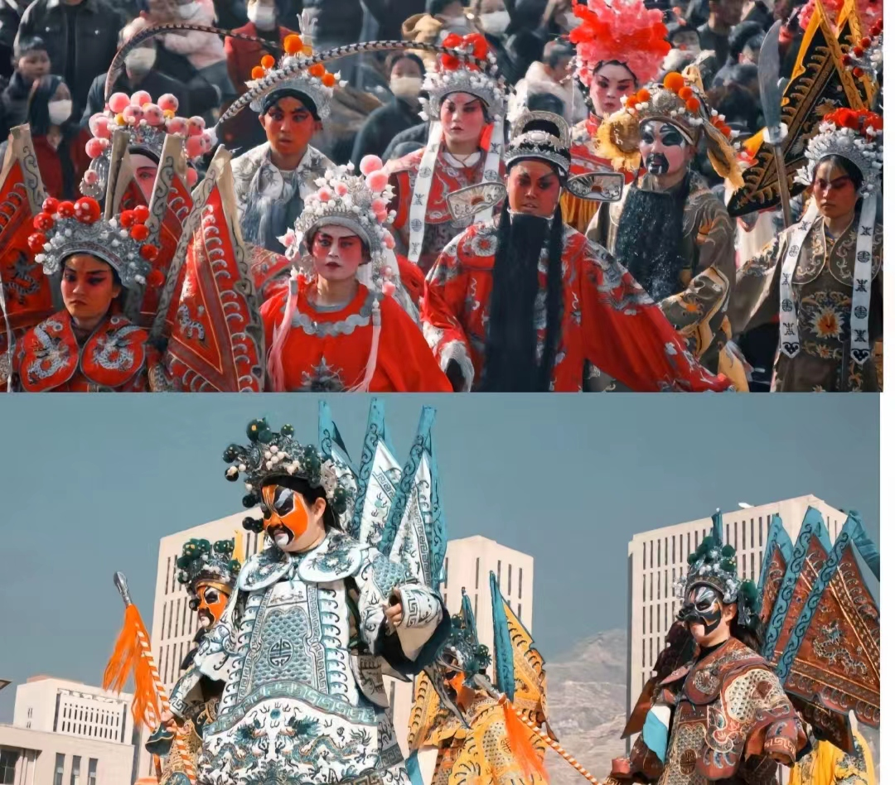
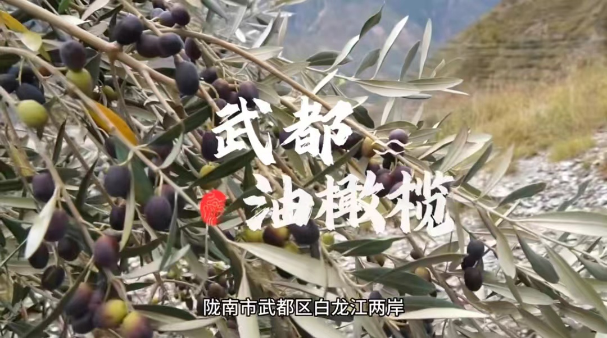

搜索
陇南，这一座位于甘肃省南部的城市，历史悠久，文化底蕴深厚。其独特的地理位置，丰富的历史文化，以及深厚的红色记忆，使它成为了一个拥有无尽故事和宝藏的城市。

陇南地处四川盆地与西北高原之间，是连接中原与西南的重要通道。 古代的蜀道文化在这里留下了丰富的历史遗存和传说故事。其中著名的有“阴平古道”、“米仓古道”等，这些古道见证了古代交通的发展和文化的交流，为研究古代交通史和文化交流提供了重要的线索。
“陇南是红军长征途经地域最广的地区之一，红一方面军、红二方面军、红四方面军、红二十五军都在这里留下过战斗足迹。”去年8月, 习近平总书记在视察甘肃重要讲话中这样讲道。 无数革命前辈的足迹遍布陇南，英雄们的战斗事迹广为流传： 1932年4月，习仲勋等老一辈无产阶级革命家领导的“两当兵变”，打响了甘肃武装革命的第一枪； 1935年9月，毛泽东主席在宕昌哈达铺作出了“到陕北去”的重大决策，成为中国革命的转折点…… 这些形态多样、特色鲜明的红色文化，所蕴含的政治和经济价值，历来都得到陇南市委、市政府的高度重视。 这些弥足珍贵、影响深远的红色资源，亦成为今天陇南儿女决战脱贫、决胜小康的宝贵精神财富和重要动力源泉。
陇南社火是一种古老的传统民俗文化现象，从汉代的灯节逐渐演化，已有两千多年的历史了。 南宋诗人范成大（1126~1193）在《上元纪吴中节物俳谐体三十二韵》中有“轻薄行歌过，颠狂社舞呈”的诗句。对此，他解释说：“民间鼓乐谓之社火，不可悉记，大抵以滑稽取笑。”后来，清人李斗在《扬州画舫录·卷九》中也说：“立春前一日，太守迎春于城东蕃厘观，令官妓扮社火：春梦婆 一，春姐二，春吏一，皂隶二，春官一。”社火集中展现了中国劳动人民的智慧与才能，它涉及音乐、舞蹈、曲艺、杂技、武术、戏曲、工艺美术等众多艺术门类。
武都油橄榄，甘肃省陇南市武都区特产，中国国家地理标志产品。 1975年，地处秦岭与岷山之间的陇南市武都区开始引种油橄榄，当时引进30多个油橄榄品种，分别在白龙江、白水江、西汉水流域沿岸海拔700至1300米范围内进行试验栽培。经过40余年的探索实践，全区油橄榄面积达到30万亩，保存面积约占中国的60%，橄榄油产量占93%，成为中国最大的初榨橄榄油生产基地，部分果园挂果和出油率高于地中海。 武都区是中国境内油橄榄最佳适宜种植区之一，是中国四大油橄榄生产基地之一，合适的气候土壤条件及种植传统，武都油油橄榄产量高，含油率高，所产橄榄油产品荣获中国林产品博览会和甘肃省林业名特优新产品博览会银奖、金奖。 2005年12月09，原国家质检总局批准对“武都油橄榄”实施地理标志产品保护。
总的来说，陇南市是一座值得你来探索的城市。无论你是历史爱好者，还是自然风光爱好者，亦或是现代城市生活的热衷者，都可以在陇南市找到自己的乐趣。这座充满历史痕迹、自然美景和现代风貌的城市，正等待着你的探索和发现。